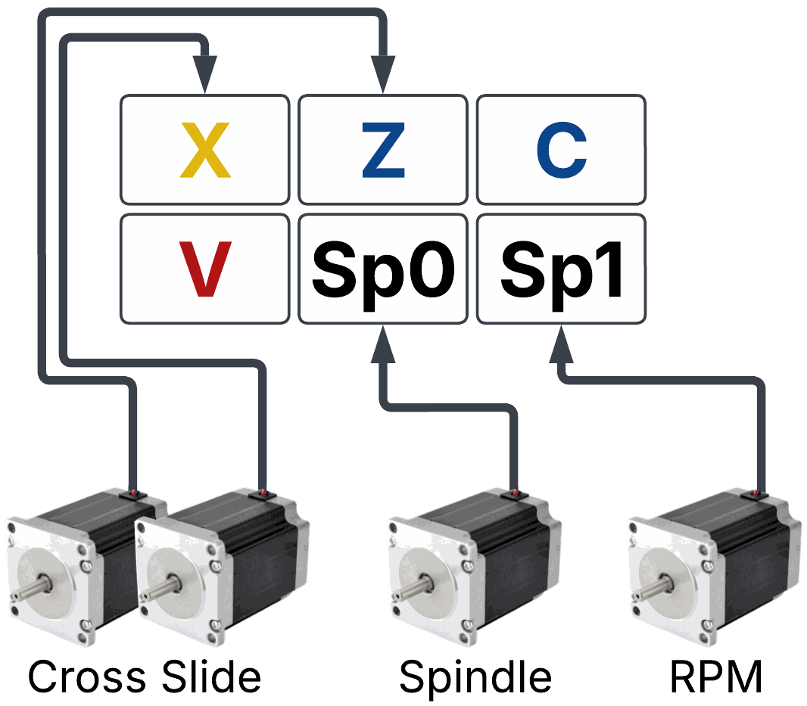
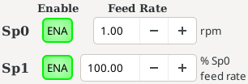
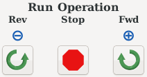
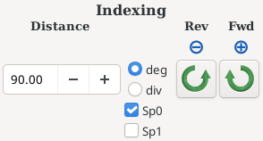
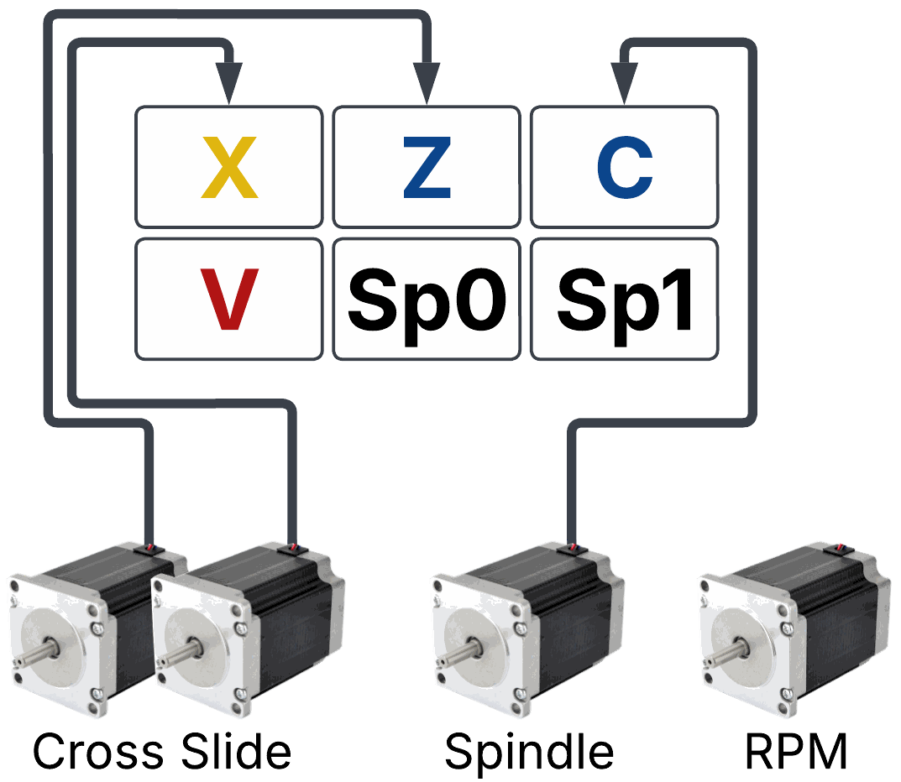

|
Gcode Example run the rosette phaser/multiplier ($1) in the forward direction (m3) at a feed rate of 5 rpm (s5)
|
There are two spindles catered for on this system:
- Sp0 = the main spindle (also known as $0 with Gcode commands), and
- Sp1 = the rosette phaser/multiplier (also known as $1 with Gcode commands)
However, there are two modes of operation for the spindles, and this is a system-driven function.
Traditional Usage

Stepper Motor Connections
Using the configuration shown to the right, you can make a lot of things happen. For example,
- Using only Sp0 and Sp1, you can do the traditional stuff we do on rose engines (e.g., rocking & pumping).
- Using Sp0 and Z, you can make a Turks Head
- Move the cutter in (moving the Z axis by hand)
- Move the cutter out (moving the Z axis by hand)
- Index the Spindle (Sp0; using Rosetta’s index function)
Repeat as necessary
When the spindle is to be used as in a typical lathe operation, it may be used for two types of operations:
|
| |
|
Run Operation |
This is used to run the spindles as is done on most rose engines (e.g., for rocking or pumping). On Rosetta, the menu to the right is used (as shown in the picture to the right). These fields are used to determine how it operates.  ENA is used to enable or disable the spindle's operation. If a command is sent to the spindle’s stepper motor, but it is not enabled, no operation will happen, and an error message will eventually popup (usually a “following error”).
The speed for the spindle is called the feed rate.
 There are 3 buttons which are used next:
|
|
| |
|
Indexing |
This is used to index the spindle(s) orientation as is done using an indexing wheel or a click plate. On Rosetta, the spindles to be indexed must be ENAbled.
Then, the menu on the right side of the screen is used, and these fields are used to determine how it operates:

There are 2 buttons which are used next:
The stop button noted above will stop this if needed. |
|
| |
Connections
For this, the spindles are connected to whichever jacks are assigned to Sp0 (the main spindle) and Sp1 (the rosette phaser/multiplier) on the Axis Selection tab of the Settings program. By default, these are channels 04 and 05, the right-hand pair of plugs on the Base Box.
Synchronized Usage

Stepper Motor Connections
If the spindle(s) need to have their movement synchronized with another axis (or axes), the spindle motors are not connected as above. Instead, each is run as a rotary axis (either A, B, or C).
Using the configuration shown to the right, you can make threads (for example). X would typically be unused, though the threading function uses it to move the cutter away from / into the piece.
This synchronized movement is performed via gCode, or from the main screen's Sync Move and Threading tabs. For threads, use the Threading tab. (LinuxCNC's own threading commands, G33 and G76, cannot be used on Rosetta - they expect the work to be turned by the Sp0 spindle, not by an axis such as C.)
Connections
For this, the spindles are connected to the jacks on the panel which are configured for use as rotary axes.